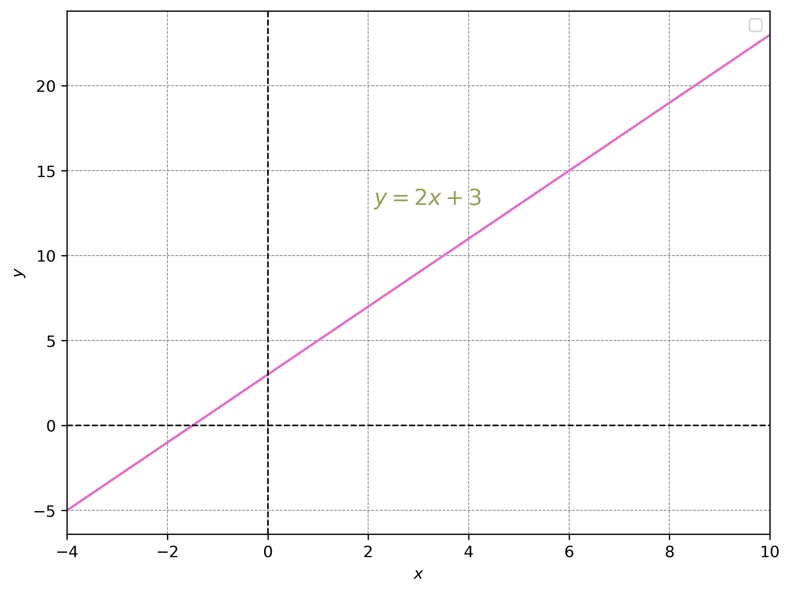
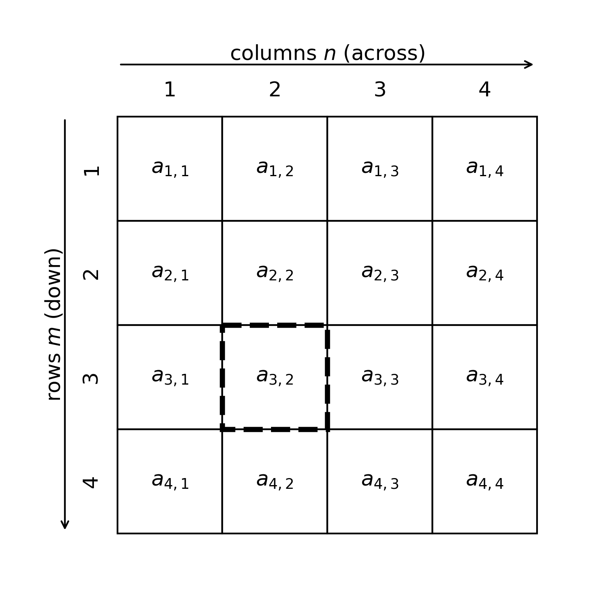

Linear Algebra
Beatrice Taylor - beatrice.taylor@ucl.ac.uk
8th October 2025
Last week
Overview of lecture 3
Looked at hypothesis testing:
- What makes a good hypothesis
- How to formally state a hypothesis
- Types of statistical tests
This week
Back to the start
Maths underpins quantitative methods
- quantitative methods includes data analysis and machine learning
- focused on algorithms and methodologies
- AND practical examples of how these can be applied
Maths underpins it

Image credit: [xkcd](https://xkcd.com/1838/)- This lecture covers some of the key concepts.
- The goal is to facilitate deeper understanding of the methods.
Maths doesn’t bite!

Learning Objectives
By the end of this lecture you should:
- Define concept of linear maps.
- Compute linear algebra equations using vectors and matrices.
- Describe how linear algebra relates to solving linear regression.
Motivation
What does it mean?
The goal is to understand equations like this:
\[\begin{align} y = \sum_{i=1}^n \beta_i x_i \end{align}\]But what does it mean???
Equations are often used in the methods sections of papers to describe the model.
Taken from: Chiou, Jou, & Yang, (2015). Factors affecting public transportation usage rate: Geographically weighted regression. Transportation Research Part A: Policy and Practice.Basics
Mathematical models
- Mathematical models help us to understand the data
- In a regression setting the model describes a function that maps input to real-valued outputs
- We can use mathematical models to validate our hypotheses/research questions
Machine learning
A model which improves after data is taken into account.
- Mayne of these concepts are also integral to machine learning
- Really just a specific type of mathematical model
- The learning part is about automatically finding patterns
Notation
Mathematical notation
Going to be using some mathematical notation
- as this is what’s used in papers!
It’s just a formal way of writing maths.
Cheat sheet
Mathematical notation cheat sheet: https://www.upyesp.org/posts/makrdown-vscode-math-notation/
Letters for numbers
There are mathematical conventions for how we describe different things.
- \(a, b, c\) represent constants
- \(x, y, z, \dots\) represent variables
- \(f, g, h, \dots\) represent functions
- \(i, j, \dots\) often used for indices (i.e. counting)
- \(a_i\) means the \(i\)-th element of a sequence
- \(A, B, C\) represent matrices
Numbers replaced by letters
The power to represent any number!

Sums
Summation notation is a compact way to write repeated addition.
\[\begin{align} \sum_{i=1}^n a_i = a_1 + a_2 + a_3 + \dots + a_n \end{align}\]Example:
\[\begin{align} \sum_{i=1}^5 i = 1+2+3+4+5 = 15 \end{align}\]Product
Product notation is a compact way to write repeated multiplication.
\[\begin{align} \prod_{i=1}^n a_i = a_1 \cdot a_2 \cdot a_3 \cdot \dots \cdot a_n \end{align}\]Example:
\[\begin{align} \prod_{i=1}^4 i = 1 \cdot 2 \cdot 3 \cdot 4 = 24 \end{align}\]a little bit of epsilon
\(\epsilon\) is used to mean a small, but arbitrary, number.
Example:
\[\begin{align} y = 2x + \epsilon \end{align}\]This means \(y\) is equal to \(2\) times \(x\) plus a small value. So if \(x=3\), then we would expect \(y\) to be close to \(6\), but not exactly \(6\).
Functions
What is a function?
A function is a mathematical operation which maps an input value to an output value.
Mathematical description of a function
\[\begin{align} f(x) = y \end{align}\]Maps values from a domain \(X\) to a range \(Y\).
\[\begin{align} f(x) = y \text{ for } x \in X, y \in Y \end{align}\]Domain and range
Domain - the set of all possible input numbers for the function
Example:
In \(f(x)=y\), \(x\) is the domain.
Range: the set of all possible output numbers from the function
Example:
In \(f(x)=y\), \(y\) is the range.
Number systems
In the applied sciences the domain and range are typically \(\mathbb N\) or \(\mathbb Z\) or \(\mathbb R\)
- \(\mathbb N\)
- Natural numbers
- 0,1,2,3,4,5,6…
- \(\mathbb Z\)
- Integers
- … -4, -3, -2, -1, 0, 1, 2, 3, 4, …
- \(\mathbb R\)
- Real numbers
Data represented algebraically
Algebra is a way of expressing numbers in a generalised or abstract form.
Example:
\[\begin{align} x \in \mathbb N \end{align}\]- This is the data represented algebraically.
- Typically a vector of numbers \(X^n\)
Example 1
Probability density function of normal distribution
\[\begin{align} f(x) = \frac{1}{\sqrt{2 \pi \sigma^2}} e^{-\frac{(x-\mu)^2}{2\sigma^2}} \end{align}\]where \(x \in \mathbb N\) and \(f(x) \in [ 0 , 1 ]\).
Note
\([0, 1]\) is the set of real numbers between \(0\) and \(1\), inclusive of \(0\) and \(1\).Example 2
The other function we’ve seen is a linear equation.
\[\begin{align} f(x) = ax + b \end{align}\]Linear equations
Linear equation
A linear equation is a linear combination of variables.
Examples include:
\[\begin{align} f(x) = ax + b \end{align}\]Straight lines
Graphically linear equations are straight lines.

Linear equation(s)
We can generalise to multiple equations.
They are:
- A system of multiple linear functions
- Which can be represented by matrices
- They can have 0, 1, or many solutions
Example 1
\[\begin{align} x+y=10 \end{align}\]- What could \(x\) and \(y\) be?
- Could have \(x=y=5\)
- Or \(x=2.5\) and \(y=7.5\)
There are many solutions!!!
Many solutions = under-specified
Example 2
\[\begin{align} x+y=10 \\ 2x+y=15 \end{align}\]In school might have solved this using substitution.
- Rearrange the first equation to get \(y=10-x\)
- Substituting in we get \(2x+(10-x)=15\)
- \(x+10=15\) \(\implies\) \(x=5\) \(\implies\) \(y=5\)
There is exactly one solution!
Example 3
\[\begin{align} x_1+x_2+x_3+x_4=10 \\ x_1+4x_2+x_3+x_4=25 \\ x_1+4x_2+43x_3+x_4=37 \\ x_1+4x_2+7x_3+59x_4=1073 \end{align}\]Very hard to solve!
Matrices
Matrix notation
\[\begin{align} x_1+x_2+x_3+x_4=10 \\ x_1+4x_2+x_3+x_4=25 \\ x_1+4x_2+43x_3+x_4=37 \\ x_1+4x_2+7x_3+59x_4=1073 \end{align}\]Can be written as:
\[\begin{align} \begin{bmatrix}1&1&1&1\cr1&4&1&1\cr1&4&43&1\cr1&4&7&59\end{bmatrix}\begin{pmatrix}x_1\cr x_2\cr x_3\cr x_4\end{pmatrix} = \begin{pmatrix}10\cr 25\cr 37\cr 1073\end{pmatrix} \end{align}\]Generalised matrix form
The generalised matrix form (for a 4x4 matrix is):
\[\begin{align} \begin{bmatrix}a_{1,1} & a_{1,2} & a_{1,3} & a_{1,4}\cr a_{2,1} & a_{2,2} & a_{2,3} & a_{2,4}\cr a_{3,1} & a_{3,2} & a_{3,3} & a_{3,4}\cr a_{4,1} & a_{4,2} & a_{4,3} & a_{4,4}\end{bmatrix}\begin{pmatrix}x_1\cr x_2\cr x_3\cr x_4\end{pmatrix} = \begin{pmatrix}y_1 \cr y_2 \cr y_3 \cr y_4\end{pmatrix} \end{align}\]Along the corridor, down the stairs
Matrices are indexed by row (\(m\)) and by column (\(n\)).

Example
\(m=2\), \(n=2\) matrix:
\[\begin{align} \begin{bmatrix}1&1\cr1&4\end{bmatrix} \end{align}\]\(m=3\), \(n=2\) matrix:
\[\begin{align} \begin{bmatrix}1&1&2\cr1&4&7\end{bmatrix} \end{align}\]Note
When \(m=n\) we have a square matrix.Matrix addition
We denote matrices by capital letters: \(A\), \(B\), …
Matrix addition is element-wise:
\[\begin{align} (A+B)_{ij} = A_{ij} + B_{ij} \end{align}\]Example:
\[\begin{align} \begin{bmatrix}1&1\cr1&4\end{bmatrix} + \begin{bmatrix}1&0\cr2&6\end{bmatrix} = \begin{bmatrix}2&1\cr3&10\end{bmatrix} \end{align}\]Matrix multiplication
Matrix multiplication is row by column.
\[\begin{align} (AB){ij} = \sum{k} A_{ik} B_{kj} \end{align}\]Example:
\[\begin{align} \begin{bmatrix}1 & 2\cr 3 & 4\end{bmatrix} \begin{bmatrix}5 & 6\cr 7 & 8\end{bmatrix} = \begin{bmatrix} 1\cdot 5 + 2\cdot 7 & 1\cdot 6 + 2\cdot 8 \cr 3\cdot 5 + 4\cdot 7 & 3\cdot 6 + 4\cdot 8 \end{bmatrix} = \begin{bmatrix} 19 & 22 \cr 43 & 50 \end{bmatrix} \end{align}\]Identity matrix
The identity matrix \(I\) acts like the number \(1\) in multiplication.
For any compatible matrix \(A\):
\[\begin{align} AI = IA = A \end{align}\]Example:
\[\begin{align} I = \begin{bmatrix} 1 & 0 & 0 \cr 0 & 1 & 0 \cr 0 & 0 & 1 \end{bmatrix} \end{align}\]Determinant of a matrix
The determinant of a square matrix \(A\) is a scalar value that gives information about:
- Whether \(A\) is invertible
- How \(A\) scales space (volume/area)
- Orientation (positive or negative)
We write this as \(\det(A)\) or \(|A|\).
Determinant of a 2×2 matrix
For
\[\begin{align} A = \begin{bmatrix} a & b \cr c & d \end{bmatrix} \end{align}\]the determinant is:
\[\begin{align} \det(A) = ad - bc \end{align}\]Example:
Inverse matrix
The inverse of a square matrix \(A\) is denoted \(A^{-1}\) and satisfies:
\[\begin{align} AA^{-1} = A^{-1}A = I \end{align}\]Inverse matrix (2x2)
For a \(2 \times 2\) matrix A:
\[\begin{align} A = \begin{bmatrix} a & b \cr c & d \end{bmatrix} \end{align}\]if \(\det(A) \neq 0\), then the inverse is:
\[\begin{align} A^{-1} = \frac{1}{\det(A)} \begin{bmatrix} d & -b \cr -c & a \end{bmatrix}, \quad \text{where } \det(A) = ad - bc \end{align}\]If \(\det(A) = 0\), the matrix has no inverse.
System of equations
Recall that a system of linear equations can be written compactly as:
\[\begin{align} Ax = y \end{align}\]where: - \(A\) is the coefficient matrix - \(x\) is the vector of unknowns - \(y\) is the vector of constants
Solving the system
If \(A\) is invertible (i.e. \(\det(A) \neq 0\)), we can solve for \(x\):
\[\begin{align} Ax &= y \\ A^{-1}Ax &= A^{-1}y \\ Ix &= A^{-1}y \\ x &= A^{-1}y \end{align}\]Thus, the solution exists and is unique whenever \(A\) has an inverse.
Maths to English
So whats does it mean?
Taken from: Chiou, Jou, & Yang, (2015). Factors affecting public transportation usage rate: Geographically weighted regression. Transportation Research Part A: Policy and Practice.Take another look
Link to the paper…
Writing the equation
Equation 1:
\[\begin{align} y_i = \beta_0(u_i, v_i) + \sum_{k=1}^p \beta_{ik}(u_i, v_i)x_{ik} + \epsilon_i \end{align}\]Equation 2:
\[\begin{align} \hat{\beta}(i) = [X^TW(i)X]^{-1}X^TW(i)Y \end{align}\]Equation 1
\[\begin{align} y_i = \beta_0(u_i, v_i) + \sum_{k=1}^p \beta_{ik}(u_i, v_i)x_{ik} + \epsilon_i \end{align}\]where:
- \(y_i\): the outcome (response) for observation \(i\)
- \(\beta_0(u_i,v_i)\): the intercept, which can vary with location \((u_i,v_i)\)
- \(\sum_{k=1}^p \beta_{ik}(u_i,v_i) x_{ik}\): the weighted sum of predictors \(x_{ik}\), where each predictor has its own coefficient that may depend on \((u_i,v_i)\)
- \(\epsilon_i\): the error term for observation \(i\)
Translating equation 1
\[\begin{align} y_i = \beta_0(u_i, v_i) + \sum_{k=1}^p \beta_{ik}(u_i, v_i)x_{ik} + \epsilon_i \end{align}\]The outcome \(y_i\) is explained by an intercept and a weighted combination of predictors, with coefficients that may change depending on the location \((u_i,v_i)\), plus some error.
Equation 2
\[\begin{align} \hat{\beta}(i) = [X^TW(i)X]^{-1}X^TW(i)Y $\hat{\beta}(i)$: the estimated coefficients at location $i$ \end{align}\]where:
- \(X\): the matrix of predictor variables
- \(Y\): the vector of observed outcomes
- \(W(i)\): a weight matrix that depends on location \(i\)
- \(X^T\): the transpose of \(X\)
- \([X^TW(i)X]^{-1}\): the inverse of the weighted cross-product matrix
Translating equation 2
\[\begin{align} \hat{\beta}(i) = [X^TW(i)X]^{-1}X^TW(i)Y $\hat{\beta}(i)$: the estimated coefficients at location $i$ \end{align}\]The estimated coefficients \(\hat{\beta}(i)\) are obtained by solving a weighted least squares problem: take the predictors \(X\), weight them with \(W(i)\), and solve for the coefficients that best fit \(Y\).
Overview
Covered
We’ve covered:
- Mathematical notation
- Sums and Products
- Functions
- Matrices
- Algebraic representations
Key takeaways
- Can use mathematical notation to write equations in a univeral language.
- Linear algebra helps us to solve systems of linear equations.
If in doubt:
Use the maths cheat sheet!
Practical
The practical will focus on understanding mathematical equations.
- Have questions prepared!

© CASA | ucl.ac.uk/bartlett/casa